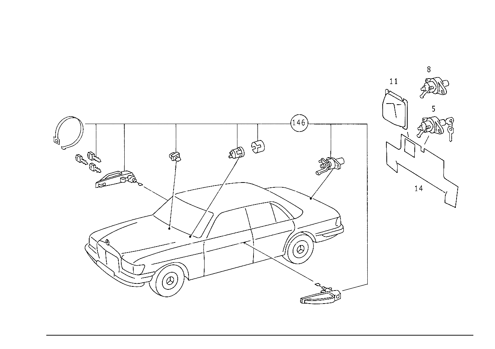

| № | Артикул | Название | Кол. | Примечание | Ограничение |
|---|---|---|---|---|---|
| 5 | A 116 750 07 85 | ЗАМОК | 1 | С КЛЮЧЕМ Z 56.014/01, Z 56.014/02 [022] WITH LOCK NUMBER UNDEFINED,FOR STORAGE PURPOSES ONLY | |
| 8 | A 116 750 01 85 | - Нажимной замок | 1 | БЕЗ КЛЮЧА Z 56.014/01, Z 56.014/02 [407] ПРИ ЗАКАЗЕ УКАЗАТЬ НОМЕР КОМПЛЕКТА ЗАМКОВ [020] UP TO CHASSIS 116.020 110396 116.024,025 127926 116.028,029 049497 116.032 086636 | |
| 8 | A 116 750 09 85 | - ЗАМОК | 1 | БЕЗ КЛЮЧА Z 56.014/01, Z 56.014/02 [407] ПРИ ЗАКАЗЕ УКАЗАТЬ НОМЕР КОМПЛЕКТА ЗАМКОВ [021] FROM CHASSIS 116.020 110397 116.024,025 127927 116.028,029 049498 116.032 086637 | |
| 11 | A 116 693 02 30 | ПАНЕЛЬ | 1 | Z 56.014/01, Z 56.014/02 | |
| 14 | A 116 694 10 76 | ОБИВКА | 1 | СЗАДИ Z 56.014/01, Z 56.014/02 [007] ANTHRACITE NO.7075 | |
| 17 | A 000 800 06 75 | Исполнительный элемент | 1 | ДВЕРЬ ВОДИТЕЛЯ Z 56.014/01, Z 56.014/02 | |
| 20 | A 116 800 00 80 | Тяга переключения передач | 1 | Z 56.014/01, Z 56.014/02 | |
| 23 | A 116 800 04 73 | Переключатель | 1 | Z 56.014/01, Z 56.014/02 | |
| 26 | N 007981 004219 | Шуруп | - | Z 56.014/01, Z 56.014/02 | |
| 26 | N 000000 000453 | Шуруп | 2 | 4.2X13; MBN 10169 4.2 X 13 Z 56.014/01, Z 56.014/02 | |
| 26 | N 007981 004208 | Шуруп | 2 | 4.2X22 Z 56.014/01, Z 56.014/02 [005] UP TO CHASSIS: 116.020 020823 116.024,025 023927 116.028,029 019660 116.032 022612 | |
| 29 | A 003 989 15 85 | КЛЕЙКАЯ ЛЕНТА | 1 | 4X9X45 MM Z 56.014/01, Z 56.014/02 [402] БОЛЬШЕ НЕ ПОСТАВЛЯЕТСЯ [006] FROM CHASSIS: 116.020 020824 116.024,025 023928 116.028,029 019661 116.032 022613 | |
| 32 | A 116 805 02 32 | Скоба | 1 | Z 56.014/01, Z 56.014/02 [006] FROM CHASSIS: 116.020 020824 116.024,025 023928 116.028,029 019661 116.032 022613 | |
| 35 | A 116 805 01 14 | Держатель | 1 | Z 56.014/01, Z 56.014/02 [006] FROM CHASSIS: 116.020 020824 116.024,025 023928 116.028,029 019661 116.032 022613 | |
| 38 | N 007981 004244 | Шуруп | - | Z 56.014/01, Z 56.014/02 | |
| 38 | N 000000 000453 | Шуруп | 2 | MBN 10169 4.2 X 13 Z 56.014/01, Z 56.014/02 [006] FROM CHASSIS: 116.020 020824 116.024,025 023928 116.028,029 019661 116.032 022613 | |
| 41 | N 000125 004319 | Шайба | 2 | Z 56.014/01, Z 56.014/02 | |
| 44 | A 000 800 06 75 | Исполнительный элемент | 2 | ЗАДНЯЯ ДВЕРЬ Z 56.014/01, Z 56.014/02 | |
| 47 | A 116 800 01 80 | Тяга переключения передач | 2 | Z 56.014/01, Z 56.014/02 | |
| 50 | A 115 994 01 60 | Скоба | 2 | Z 56.014/01, Z 56.014/02 [017] UP TO CHASSIS: 116.020 103123 116.024,025 116353 116.028,029 046767 116.032 081591 | |
| 53 | N 006799 003202 | Стопорная шайба | 3 | Z 56.014/01, Z 56.014/02 | |
| 56 | N 007981 004258 | Шуруп | 6 | 4.8X16 Z 56.014/01, Z 56.014/02 | |
| 59 | N 000433 005304 | Шайба | 4 | 5mm Z 56.014/01, Z 56.014/02 | |
| 62 | A 116 800 02 75 | Исполнительный элемент | 1 | Z 56.014/01, Z 56.014/02 | |
| 65 | A 115 805 00 36 | Удерживающая пружина | 1 | Z 56.014/01, Z 56.014/02 | |
| 68 | N 006799 004001 | Стопорная шайба | 1 | Z 56.014/01, Z 56.014/02 | |
| 71 | N 007981 004322 | Шуруп | - | Z 56.014/01, Z 56.014/02 | |
| 71 | N 007981 004233 | Шуруп | - | Z 56.014/01, Z 56.014/02 | |
| 71 | N 000000 000460 | Шуруп | 2 | 4.8X13 Z 56.014/01, Z 56.014/02 | |
| 74 | A 116 800 02 19 | Бак | 1 | Z 56.014/01, Z 56.014/02 | |
| 77 | A 123 805 02 98 | - Уплотнение | 1 | Z 56.014/01, Z 56.014/02 | |
| 80 | A 002 988 53 78 | Защита от проворота | 1 | Z 56.014/01, Z 56.014/02 | |
| 83 | A 107 800 12 75 | Исполнительный элемент | 1 | Z 56.014/01, Z 56.014/02 | |
| 86 | A 116 805 00 14 | ДЕРЖАТЕЛЬ | 1 | Z 56.014/01, Z 56.014/02 | |
| 89 | N 007981 004322 | Шуруп | - | Z 56.014/01, Z 56.014/02 | |
| 89 | N 007981 004233 | Шуруп | - | Z 56.014/01, Z 56.014/02 | |
| 89 | N 000000 000460 | Шуруп | 2 | 4.8X13 Z 56.014/01, Z 56.014/02 | |
| 89 | N 007981 004339 | Шуруп | - | Z 56.014/01, Z 56.014/02 | |
| 89 | N 000000 000459 | Шуруп | 1 | MBN 10169 4.8 X 9.5 Z 56.014/01, Z 56.014/02 | |
| 92 | N 000125 004319 | Шайба | 1 | Z 56.014/01, Z 56.014/02 | |
| 95 | A 112 805 00 36 | Нажимная пружина | 1 | Z 56.014/01, Z 56.014/02 | |
| 98 | A 107 805 00 17 | втулка | 1 | Z 56.014/01, Z 56.014/02 | |
| 101 | A 123 800 00 78 | Клапан | 1 | ПОД КРЫШКОЙ ПОД ПРИБОРН. ПАНЕЛЬЮ Z 56.014/01, Z 56.014/02 [016] FROM CHASSIS: 116.020: 073746 116.024,025: 069953 116.028,029: 036318 116.032,033: 056456 116.036 001428 | |
| 101 | A 116 800 03 78 | Обратный клапан | 1 | Z 56.014/01, Z 56.014/02 | |
| 107 | A 007 997 61 82 | Шланг | 1 | 50mm; 9X2.75 MM Z 56.014/01, Z 56.014/02 [404] ЗАКАЗЫВАТЬ ПОГОННЫМИ МЕТРАМИ [004] FROM CHASSIS: 116.020 007440 116.024 010257 116.028 010325 116.032 006850 | |
| 113 | A 005 997 59 82 | ТРУБОПРОВОД | 0 | БЕЛЫЙ Z 56.014/01, Z 56.014/02 [404] ЗАКАЗЫВАТЬ ПОГОННЫМИ МЕТРАМИ | |
| 113 | A 005 997 59 82 | - ТРУБОПРОВОД | 1 | 1500mm Z 56.014/01, Z 56.014/02 [404] ЗАКАЗЫВАТЬ ПОГОННЫМИ МЕТРАМИ [008] UP TO CHASSIS: 116.020 042888 116.024,025 043116 116.028,029 027096 116.032 038396 | |
| 113 | A 005 997 59 82 | - ТРУБОПРОВОД | 1 | 2350 MM Z 56.014/01, Z 56.014/02 [404] ЗАКАЗЫВАТЬ ПОГОННЫМИ МЕТРАМИ [008] UP TO CHASSIS: 116.020 042888 116.024,025 043116 116.028,029 027096 116.032 038396 | |
| 113 | A 005 997 59 82 | - ТРУБОПРОВОД | 1 | 1450 MM Z 56.014/01, Z 56.014/02 [404] ЗАКАЗЫВАТЬ ПОГОННЫМИ МЕТРАМИ [008] UP TO CHASSIS: 116.020 042888 116.024,025 043116 116.028,029 027096 116.032 038396 | |
| 113 | A 005 997 59 82 | - ТРУБОПРОВОД | 1 | 1300 MM Z 56.014/01, Z 56.014/02 [404] ЗАКАЗЫВАТЬ ПОГОННЫМИ МЕТРАМИ [008] UP TO CHASSIS: 116.020 042888 116.024,025 043116 116.028,029 027096 116.032 038396 | |
| 113 | A 005 997 59 82 | - ТРУБОПРОВОД | 1 | 1450 MM Z 56.014/01, Z 56.014/02 [404] ЗАКАЗЫВАТЬ ПОГОННЫМИ МЕТРАМИ [008] UP TO CHASSIS: 116.020 042888 116.024,025 043116 116.028,029 027096 116.032 038396 | |
| 113 | A 005 997 59 82 | - ТРУБОПРОВОД | 1 | 850mm Z 56.014/01, Z 56.014/02 [404] ЗАКАЗЫВАТЬ ПОГОННЫМИ МЕТРАМИ [008] UP TO CHASSIS: 116.020 042888 116.024,025 043116 116.028,029 027096 116.032 038396 | |
| 113 | A 005 997 59 82 | - ТРУБОПРОВОД | 1 | 2150 MM Z 56.014/02 [404] ЗАКАЗЫВАТЬ ПОГОННЫМИ МЕТРАМИ [008] UP TO CHASSIS: 116.020 042888 116.024,025 043116 116.028,029 027096 116.032 038396 | |
| 113 | A 005 997 59 82 | - ТРУБОПРОВОД | 1 | 210 MM Z 56.014/01, Z 56.014/02 [404] ЗАКАЗЫВАТЬ ПОГОННЫМИ МЕТРАМИ [008] UP TO CHASSIS: 116.020 042888 116.024,025 043116 116.028,029 027096 116.032 038396 | |
| 113 | A 005 997 59 82 | - ТРУБОПРОВОД | 1 | 1450 MM Z 56.014/01, Z 56.014/02 [404] ЗАКАЗЫВАТЬ ПОГОННЫМИ МЕТРАМИ [008] UP TO CHASSIS: 116.020 042888 116.024,025 043116 116.028,029 027096 116.032 038396 | |
| 116 | A 005 997 71 82 | ШЛАНГ | - | Z 56.014/01, Z 56.014/02 | |
| 116 | A 000 158 14 35 | Трубопровод | 0 | ЖЕЛТЫЙ; 4X1mm Z 56.014/01, Z 56.014/02 [404] ЗАКАЗЫВАТЬ ПОГОННЫМИ МЕТРАМИ | |
| 116 | A 000 158 14 35 | - Трубопровод | 1 | 4300 MM; 4X1mm Рулевое управление: Влево Z 56.014/02 [404] ЗАКАЗЫВАТЬ ПОГОННЫМИ МЕТРАМИ [008] UP TO CHASSIS: 116.020 042888 116.024,025 043116 116.028,029 027096 116.032 038396 | |
| 116 | A 000 158 14 35 | - Трубопровод | 1 | 5350 MM; 4X1mm Рулевое управление: Вправо Z 56.014/02 [404] ЗАКАЗЫВАТЬ ПОГОННЫМИ МЕТРАМИ [008] UP TO CHASSIS: 116.020 042888 116.024,025 043116 116.028,029 027096 116.032 038396 | |
| 116 | A 000 158 14 35 | - Трубопровод | 1 | 350 MM; 4X1mm Z 56.014/01, Z 56.014/02 [404] ЗАКАЗЫВАТЬ ПОГОННЫМИ МЕТРАМИ [016] FROM CHASSIS: 116.020: 073746 116.024,025: 069953 116.028,029: 036318 116.032,033: 056456 116.036 001428 | |
| 116 | A 000 158 14 35 | - Трубопровод | 1 | 1600 MM; 4X1mm Z 56.014/01, Z 56.014/02 [404] ЗАКАЗЫВАТЬ ПОГОННЫМИ МЕТРАМИ [016] FROM CHASSIS: 116.020: 073746 116.024,025: 069953 116.028,029: 036318 116.032,033: 056456 116.036 001428 | |
| 116 | A 005 997 71 82 | ШЛАНГ | - | Z 56.014/01, Z 56.014/02 | |
| 116 | A 000 158 14 35 | Трубопровод | 1 | ЖЕЛТ./КОРИЧН. 2000 MM; 4X1mm Z 56.014/01, Z 56.014/02 [404] ЗАКАЗЫВАТЬ ПОГОННЫМИ МЕТРАМИ [008] UP TO CHASSIS: 116.020 042888 116.024,025 043116 116.028,029 027096 116.032 038396 | |
| 119 | A 000 997 71 52 | ШЛАНГ | 0 | YELLOW/GREEN 2000 MM Z 56.014/01, Z 56.014/02 [404] ЗАКАЗЫВАТЬ ПОГОННЫМИ МЕТРАМИ | |
| 119 | A 000 997 71 52 | - ШЛАНГ | 1 | 1600 MM Z 56.014/01, Z 56.014/02 [404] ЗАКАЗЫВАТЬ ПОГОННЫМИ МЕТРАМИ [009] FROM CHASSIS: 116.020 042889 116.024,025 043117 116.028,029 027097 116.032 038397 | |
| 119 | A 000 997 71 52 | - ШЛАНГ | 1 | 2500mm Z 56.014/01, Z 56.014/02 [404] ЗАКАЗЫВАТЬ ПОГОННЫМИ МЕТРАМИ [009] FROM CHASSIS: 116.020 042889 116.024,025 043117 116.028,029 027097 116.032 038397 | |
| 119 | A 000 997 71 52 | - ШЛАНГ | 1 | 1150 MM Z 56.014/01, Z 56.014/02 [404] ЗАКАЗЫВАТЬ ПОГОННЫМИ МЕТРАМИ [009] FROM CHASSIS: 116.020 042889 116.024,025 043117 116.028,029 027097 116.032 038397 | |
| 119 | A 000 997 71 52 | - ШЛАНГ | 1 | 1400 MM Z 56.014/01, Z 56.014/02 [404] ЗАКАЗЫВАТЬ ПОГОННЫМИ МЕТРАМИ [009] FROM CHASSIS: 116.020 042889 116.024,025 043117 116.028,029 027097 116.032 038397 | |
| 119 | A 000 997 71 52 | - ШЛАНГ | 1 | 1600 MM Z 56.014/01, Z 56.014/02 [404] ЗАКАЗЫВАТЬ ПОГОННЫМИ МЕТРАМИ [009] FROM CHASSIS: 116.020 042889 116.024,025 043117 116.028,029 027097 116.032 038397 | |
| 119 | A 000 997 71 52 | - ШЛАНГ | 1 | 850mm Z 56.014/01, Z 56.014/02 [404] ЗАКАЗЫВАТЬ ПОГОННЫМИ МЕТРАМИ [009] FROM CHASSIS: 116.020 042889 116.024,025 043117 116.028,029 027097 116.032 038397 | |
| 119 | A 000 997 71 52 | - ШЛАНГ | 1 | 3650 MM Z 56.014/02 [404] ЗАКАЗЫВАТЬ ПОГОННЫМИ МЕТРАМИ [009] FROM CHASSIS: 116.020 042889 116.024,025 043117 116.028,029 027097 116.032 038397 | |
| 122 | A 000 997 70 52 | ШЛАНГ | 0 | YELLOW/RED Z 56.014/01, Z 56.014/02 [404] ЗАКАЗЫВАТЬ ПОГОННЫМИ МЕТРАМИ | |
| 122 | A 000 997 70 52 | - ШЛАНГ | 1 | 1600 MM Z 56.014/01, Z 56.014/02 [404] ЗАКАЗЫВАТЬ ПОГОННЫМИ МЕТРАМИ [009] FROM CHASSIS: 116.020 042889 116.024,025 043117 116.028,029 027097 116.032 038397 | |
| 122 | A 000 997 70 52 | - ШЛАНГ | 1 | 2500mm Z 56.014/01, Z 56.014/02 [404] ЗАКАЗЫВАТЬ ПОГОННЫМИ МЕТРАМИ [009] FROM CHASSIS: 116.020 042889 116.024,025 043117 116.028,029 027097 116.032 038397 | |
| 122 | A 000 997 70 52 | - ШЛАНГ | 1 | 1150 MM Z 56.014/01, Z 56.014/02 [404] ЗАКАЗЫВАТЬ ПОГОННЫМИ МЕТРАМИ [009] FROM CHASSIS: 116.020 042889 116.024,025 043117 116.028,029 027097 116.032 038397 | |
| 122 | A 000 997 70 52 | - ШЛАНГ | 1 | 1400 MM Z 56.014/01, Z 56.014/02 [404] ЗАКАЗЫВАТЬ ПОГОННЫМИ МЕТРАМИ [009] FROM CHASSIS: 116.020 042889 116.024,025 043117 116.028,029 027097 116.032 038397 | |
| 122 | A 000 997 70 52 | - ШЛАНГ | 1 | 1600 MM Z 56.014/01, Z 56.014/02 [404] ЗАКАЗЫВАТЬ ПОГОННЫМИ МЕТРАМИ [009] FROM CHASSIS: 116.020 042889 116.024,025 043117 116.028,029 027097 116.032 038397 | |
| 122 | A 000 997 70 52 | - ШЛАНГ | 1 | 850mm Z 56.014/01, Z 56.014/02 [404] ЗАКАЗЫВАТЬ ПОГОННЫМИ МЕТРАМИ [009] FROM CHASSIS: 116.020 042889 116.024,025 043117 116.028,029 027097 116.032 038397 | |
| 122 | A 000 997 70 52 | - ШЛАНГ | 1 | 2150 MM Z 56.014/02 [404] ЗАКАЗЫВАТЬ ПОГОННЫМИ МЕТРАМИ [009] FROM CHASSIS: 116.020 042889 116.024,025 043117 116.028,029 027097 116.032 038397 | |
| 122 | A 000 997 70 52 | - ШЛАНГ | 1 | 210 MM Z 56.014/01, Z 56.014/02 [404] ЗАКАЗЫВАТЬ ПОГОННЫМИ МЕТРАМИ [009] FROM CHASSIS: 116.020 042889 116.024,025 043117 116.028,029 027097 116.032 038397 | |
| 122 | A 000 997 70 52 | - ШЛАНГ | 1 | 1450 MM Z 56.014/01, Z 56.014/02 [404] ЗАКАЗЫВАТЬ ПОГОННЫМИ МЕТРАМИ [009] FROM CHASSIS: 116.020 042889 116.024,025 043117 116.028,029 027097 116.032 038397 | |
| 122 | A 001 997 39 52 | Шланг | 0 | YELLOW/GREY Z 56.014/01, Z 56.014/02 [404] ЗАКАЗЫВАТЬ ПОГОННЫМИ МЕТРАМИ | |
| 122 | A 001 997 39 52 | - Шланг | 1 | 4300 MM Рулевое управление: Влево Z 56.014/02 [404] ЗАКАЗЫВАТЬ ПОГОННЫМИ МЕТРАМИ [009] FROM CHASSIS: 116.020 042889 116.024,025 043117 116.028,029 027097 116.032 038397 | |
| 122 | A 001 997 39 52 | - Шланг | 1 | 5350 MM Рулевое управление: Вправо Z 56.014/02 [404] ЗАКАЗЫВАТЬ ПОГОННЫМИ МЕТРАМИ [009] FROM CHASSIS: 116.020 042889 116.024,025 043117 116.028,029 027097 116.032 038397 | |
| 125 | A 005 997 71 82 | ШЛАНГ | - | Z 56.014/01, Z 56.014/02 | |
| 125 | A 000 158 14 35 | Трубопровод | 1 | ЖЕЛТЫЙ 2000 MM; 4X1mm Z 56.014/01, Z 56.014/02 [404] ЗАКАЗЫВАТЬ ПОГОННЫМИ МЕТРАМИ [009] FROM CHASSIS: 116.020 042889 116.024,025 043117 116.028,029 027097 116.032 038397 | |
| 128 | A 003 988 45 78 | Скоба | 4 | Z 56.014/01, Z 56.014/02 | |
| 131 | A 126 988 20 78 | Скоба | 4 | Z 56.014/01, Z 56.014/02 | |
| 134 | A 114 988 01 78 | Скоба | 1 | ВАКУУМ.ТРУБОПРОВ.НА КОЛЕСН.АРКЕ; 15 X 5 MM Z 56.014/01, Z 56.014/02 | |
| 137 | A 007 997 61 82 | Шланг | NB | 9X2.75 MM Z 56.014/01, Z 56.014/02 [404] ЗАКАЗЫВАТЬ ПОГОННЫМИ МЕТРАМИ | |
| 140 | A 117 078 01 45 | Штуцер ответвления | NB | Z 56.014/01, Z 56.014/02 [010] UP TO CHASSIS: 116.020 101832 116.024,025 114368 116.028,029 046259 116.032,033 080465 116.036 004222 116.120 000319 | |
| 143 | A 117 078 01 45 | Штуцер ответвления | NB | Z 56.014/01, Z 56.014/02 [010] UP TO CHASSIS: 116.020 101832 116.024,025 114368 116.028,029 046259 116.032,033 080465 116.036 004222 116.120 000319 | |
| 143 | A 117 078 01 45 | Штуцер ответвления | NB | Z 56.014/01, Z 56.014/02 [011] FROM CHASSIS: 116.020 101833 116.024,025 114369 116.028,029 046260 116.032,033 080466 116.036 004223 116.120 000320 | |
| 146 | A 116 893 01 03 | ГАРНИТУРА БЛОКИРОВКИ | 1 | Z 56.014/01, Z 56.014/02 [012] UP TO CHASSIS: 116.020: 10/50,12/52 024237 116.020: 20/60,22/62 024298 116.024: 10/50,12/52 027443 116.024: 20/60,22/62 027467 116.028: 10/50,12/52 021216 116.028: 20/60,22/62 021238 116.032,033: 10/50,12/52 026369 116.032,033: 20/60,20/62 026408 | |
| 146 | A 116 893 03 03 | Комплект цилиндра замка | 1 | Z 56.014/01, Z 56.014/02 [014] FROM CHASSIS: 116.020: 10/50,12/52 024238 116.020: 20/60,22/62 024299 116.024: 10/50,12/52 027444 116.024: 20/60,22/62 027468 116.028: 10/50,12/52 021217 116.028: 20/60,22/62 021239 116.032,033: 10/50,12/52 026370 116.032,033: 20/60,22/62 026409 116.025,029: 000001 [018] UP TO CHASSIS: 116.020 101559 116.024,025 113561 116.028,029 046046 116.032,033 080192 | |
| 146 | A 116 893 06 03 | ГАРНИТУРА БЛОКИРОВКИ | 1 | Z 56.014/01, Z 56.014/02 [020] UP TO CHASSIS 116.020 110396 116.024,025 127926 116.028,029 049497 116.032 086636 [019] FROM CHASSIS: 116.020 101560 116.024,025 113562 116.028,029 046047 116.032,033 080193 | |
| 146 | A 116 893 09 03 | Комплект цилиндра замка | 1 | Z 56.014/01, Z 56.014/02 [021] FROM CHASSIS 116.020 110397 116.024,025 127927 116.028,029 049498 116.032 086637 |
Позиций: 97 · подписано на схемах: 97 · колесо — плавный зум в курсор, перетаскивание — пан, двойной клик — зум, клик по артикулу — скопировать · наведите на строку или цифру на схеме — подсветка связки, клик — закрепить.